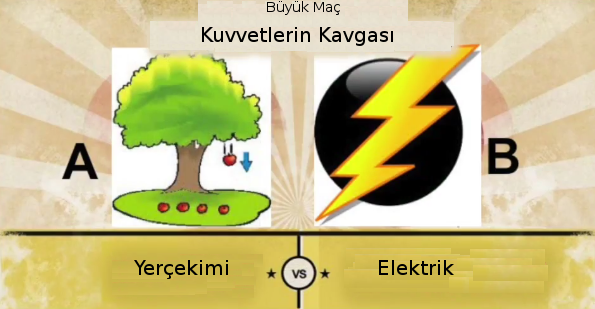
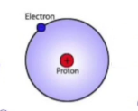
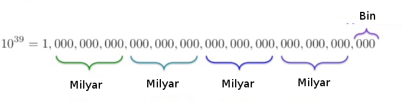
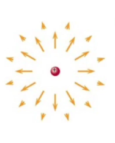
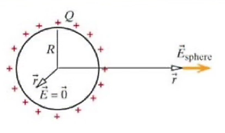
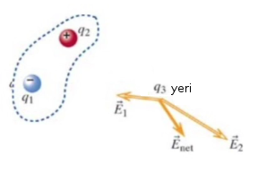
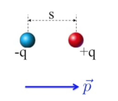
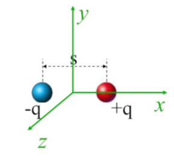
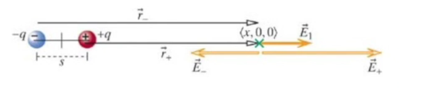

Bir soruyla başlayalım: eğer yerçekimi kuvveti ve elektrik kuvveti kavga etse kim yenerdi?

[Hoca bu soruya cevabı sınıf içi oy verme sisteminde sordu, oylar geldi, 87% elektrik dedi]. Tamam. Şimdi bu sorunun cevabını bilimsel olarak vermeye uğraşacağız. Matematik ve mantık kullanarak cevabı bulmaya uğraşacağız.
Kavganın tabii ki kuralları olmalı, ki adil bir kapışma olsun.
Kapışmanın yeri olarak bir hidrojen atomunu seçeceğiz. Hidrojen atomu bir proton ve bir elektrondan oluşur, bu ikisi arasında özel bir mesafe olduğunu varsayacağım, ve bu mesafe üzerinden bu iki öğe arasında hem yerçekimi, hem de elektrik kuvvetini hesaplayacağım.

Üstte görülen biraz karikatürsel tabii, gerçekte eletronlar “bulanık (fuzzy)’’, kesin olmayan, bulutumsu bir yapıda. Bu resmin doğru olmadığını kimyadan biliyoruz değil mi? Elektron çekirdek etrafında o kadar hızlı dönüyor ki bu bir bulanık bir top şekli oluşturuyor, dokunduğunuzda o topa dokunmuş oluyorsunuz [eğer elektron küresel dış cepheri oluşturuyorsa farklı farklı sürekli farklı yörüngelerde gidiyor demektir, yani iki boyutta tek çember üzerinde değil sürekli merkeze aynı mesafede ama farklı şekillerde dönüşü gerçekleştiriyor]. Bu dokunsal deney bir vantilator ile olana benzer. Orada da pervane o kadar hızlı dönüyor ki elimizi uzatınca pervaneye bir şekilde dokunmuş oluyoruz.
Bu çılgın dönüşün tabii ortalama bir merkeze uzaklığı var, bu mesafe, adil bir kavga olsun diye bunu seçtik, \(r = 5.3 x 10^{-11}m\), ki bu Bohr yarıçapı olarak ta biliniyor. O zaman yerçekimi kuvveti \(F_{grav}\) hesabı için
\[ F_{grav} = G \frac{m_1 m_2}{r^2} \hat{r}\]
Eletronun kütlesi altta, oldukça az,
\[ m_{electron} = 9 x 10^{-31} kg \]
Proton altta, biraz daha fazla,
\[ m_{proton} = 1.7 x 10^{-27} kg \]
Bu iki kütlenin büyüklük/boyut sırası (üstelsel fark olarak -orders of magnitude-) bağlamında ne kadar farklı olduğunu görüyoruz. Bir proton elektronun aşağı yukarı 10,000 katı daha ağır.
\[ F_{grav} = \frac{ (6.7 x 10^{-11} Nm^2 / kg^2) (1.7 x 1^{-27} kg) (9 x 10^{-31} kg) } { (5.3 x 10^{-11} m)^2 } \approx O(10^{-46}) \]
\(\hat{r}\) bize bir yön veriyor sadece, ama bizim sadece bir büyüklüğe ihtiyacımız var o sebeple \(\hat{r}\)’i kullanmadım. Bu arada aslında hidrojen protonu da biraz hareket ediyor, elektron ve proton birbirlerinin etrafında dönüyorlar, ama proton o kadar ağır ki hidrojen atomu olarak onu kabul ediyoruz, ve proton sanki yerinde duruyormuş gibi düşünüyoruz.
Üstteki hesabın büyüklük/boyut sırası olarak alındığına dikkat, dediğim gibi kabaca bir büyüklük ile ilgileniyorum, hatta büyüklüğün en büyük kısmiyla ilgileniyorum. Kaç tane sıfır var elimde bunu bilmek istiyorum, \(O()\) notasyonu bu sebeple kullanıldı. Yani 10’un katları nedir, buna bakıyoruz, ondan önce gelen kısmı dikkate almıyoruz, \(2 x 10^{5}\) ile \(5 x 10^{5}\) aynı şey oluyor.
Üstteki \(10^{-46}\) sonucunu aslında çarpımı sadece 10’un katlarının uygulayarak kafadan hesapla bulabilirdim. Neyse sağlama olsun diye alta veriyoruz,
print ((6.7e-11 * 1.7e-27 * 9e-31) / (5.3e-11)**2)3.64934140263e-47[-47 çıktı ama neyse, hoca hesabı yanlış yapmış olabilir] Fakat kabaca bir hesap yapmak istesek çarpımlar 10 katları için toplam bölüm ise çıkartma olacağı için sadece 10’un katları üzerinden toplama çıkartma ile bir sonuca erisebilirdik,
print -11-27-31-(-22)-47-22 çünkü -11’in karesi alındı. Niye bu hesabı yapmanızı istedim? Hesap makinaları, bilgisayarlar ile pek çok hesabı yapabiliyoruz tabii ki. Ama kontrol amaçlı olarak bu hesabı akıldan kabaca yapmak çok faydalı. Çünkü belki bilgisayara bazı değerleri yanlış girmişizdir, ya da hesap kodlamasında hata olur, vs. Ayrıca boyut sırası konusunda fiziksel akıl yürütme, sezgi yetisini kazanmak iyidir.
Neyse \(O(10^{-46}) N\), yani Newton olarak yerçekimi kuvvetini hesapladık.
Şimdi elektrik kuvvetini hesaplayalım. Hesap yani hesap sadece farkı sayıları kullanarak.
\[ r = 5.3 x 10^{-11} m \]
Sabit lazım (sadece birimlerin doğru çıkması için kullanıyoruz)
\[ \frac{1}{4\pi \epsilon_0} = 8.99 x 10^{9} Nm^2\]
Formülü hatırlarsak,
\[ F_{elec} = \frac{1}{4\pi \epsilon_0} \frac{Q_1 Q_2}{r^2} \hat{r} \]
Sayıları yerine koyalım, genel büyüklük ile ilgilendiğim için \(\hat{r}\)’i yoksayıyorum.
\[ F_{elec} = \frac{(8.99 x 10^{9} Nm^2) (1.60 x 10^{-19} C)^2 }{ (5.3 x 10^{-11} m )^2 } \approx O(10^{-7}) N \]
Hesap formatı yerçekimine ne kadar çok benziyor değil mi? Her iki kuvvet te \(1/r^2\)’e oranlı olarak azalıyor, çünkü daha önce dediğim gibi fizikte \(1/r^2\) kanunları çok yaygındır. Ayrıca görüldüğü gibi mesafeyi eşit aldım çünkü adil bir dövüş olmalı, aynı mesafe üzerinden yerçekimi ve elektriği karşılaştırıyoruz. Yük \(1.60 x 10^{-19} C\), bu mantıklı çünkü tek bir parçacık (elektron, proton) bakıyoruz ve Millikan deneyinden biliyoruz ki tek parçacıgin yükü bu sayıdır. Ve sonuç boyut sırası olarak \(-7\). Kabaca hesap,
print 9 + (-19*2) - (-11*2) -7Aynı sonuç.
Peki maçta kim galip geldi? Elektrik kesinlikle galip geldi. Eğer sadece üstteki büyüklükleri alsam ve bir oran hesaplasam,
\[ \frac{F_{elec}}{F_{grav}} \approx 2.27 x 10^{39}\]
Yani hidrojen atomu içinde elektrik kuvveti ile yerçekimi arasında 39 boyut sırası var, işte bu sebeple [eğer aldıysanız] kimya öğretmeniniz size hidrojen atomunu anlatırken hiç yerçekim kuvvetinden bahsetmedi, çünkü o çerçevede hakikaten hiç anlamlı, önemli değil. Demek ki elektrik kuvveti yerçekiminden çok, çok daha kuvvetli.
Deney olarak şunu yapalım, bir tahta parçasını masa üzerinde koyuyorum, onu ufak bir platform üzerine koydum, hassas bir dengede duruyor, böylece çekilip itilirse bunu hemen göreceğim. Ona demir bir boruyu yaklaştırıyorum, hem tahtada hem boruda kütle var, aradaki çekim kuvveti tahtayı etkilemeli. Ama etkilemiyor çünkü bu tür çekim çok zayıf. Ama demir boruya bir kumaşı sürte sürte onu yüklü hale getirirsem şimdi yaklaştırıyorum [ve tahtanın hareket ettiği görülüyor].
39 boyut sırası üstünde olmak nasıl bir şey hayal etmesi zor olabilir, eğer üç sıfır bin ise, 39 boyut sırası bin tane milyar milyar milyar milyara tekabül eder, buna İngilizce duodecillion deniyormuş, dün gece İnternet’ten baktım. Bu tür bir sayının ayrı isminin olduğunu beklemiyordum açıkcası, ama varmış.

Hepinize 10’un Katları video’sunu [1] seyretmenizi tavsiye ederim. Lisede belki öğretmenlerinizden biri bu video’yu göstermiştir. 70’li yıllarda çekilmiş, video evrende ölçülebilecek en büyük yapılardan başlıyor, ki bunlar galaksi kümeleri, ve en ufak ölçülebilecek şeylerden biri, protona bakıyor. İşte o video anlatıyor ki bu en ufak ile en büyük arasında 39 boyut sırası var.
Devam edelim; eh karşılaştırmayı yaptık, elektrik yerçekimin 39 boyutu sırası üzerinde. Peki o zaman niye günlük yaşamda sürekli yerçekimini hissediyoruz ama elektrik çekimini hissetmiyoruz? Yani şu anda yerçekimini hissediyoruz değil mi? Eğer sandalyenizde oturabiliyorsanız, durduk yerde oraya buraya savrulmuyorsanız yerçekim etkisi var demektir. Neler oluyor o zaman?
[Bir öğrenci büyük kütle diyor] Evet olan şu: insanlara etki eden yerçekiminden bahsedince koca dünyanın kütlesinin üzerimizdeki kuvvetini hesap etmemiz gerekir. Dünyanın kütlesi çok büyük olduğu için yerçekimi genelde etkisi olsa bile dünya çapında olunca çok etkili hale gelir.
[Bir diğeri elektrik kuvvetini de hissediyoruz aslında hocam diyor] Doğru!. Bunun etkisini şurada çözülüp bir biyolojik çorba gibi yerde yayılmamamda görebiliyorum. Elektriksel kuvvetler beni, hepimizi bir arada tutuyor. Bu bir bakıma nefes aldığımız havayı hissetmememiz gibi, sürekli orada, onu normal görüyoruz artık.
[Bir başka öğrenci sizi iten çok elektriksel kuvvet var diyor] Evet şu anda pek çok şey tarafından itiliyorum da.. Mesela yerçekimi beni çekip ta birinci kata göndermiyor. Altımdaki yer tabakası bunu engelliyor ve bu engelleme sonuçta bir elektriksel etkileşim, altımdaki kat tabakasının elektronları benim elektronlarımı itiyor.
Genel olarak şu yorum en iyisi belki: elektrik kuvveti müthiş kuvvetli evet, 39 boyut sırası yerçekiminin üzerinde, ama bu kuvveti hissetmiyor olmamızın sebeplerinden biri pozitif ve negatif yüklerin olması. Ben + ve - yüklerden oluşuyorum (ve nötr olan nötronlardan), ama elektrik kuvveti (ve kuantum mekaniği) tüm bunları birarada tutuyor, eksi ve artı yükler arasında çekim var, kuvvetli bir çekim, ama makro seviyede bakarsanız bu kuvvetler birbirini dengelemiş bir halde. Net olarak fazla bir - ya da + yüküm yok. Kış zamanı gelince halıda yürüyerek, vs. net yük elde edebilirim ve bir demiri tutunca elektrik kuvvetini görebilirim, ama genelde bu dengesizlik görülmez. Diğer yandan eksi kütle diye bir şey yok, öyle ki yerçekimi kuvvetini dengeleyip yoketsin.
Şimdi ilginç bir soru: daha önce Coulomb’un kanunundan bahsettik, iki yük arasında kuvvet
\[ \vec{F} = \frac{1}{4\pi \epsilon_0} \frac{Q_1 Q_2}{r^2} \hat{r}\]
Sonra dedik ki bu iki yükün birbirine kuvvet uygulamasının sebebi her yük etrafında bir elektrik alan var, diğer yük bu alanı hissediyor, ve etkileniyor. Yani öteki yükü resimden çıkartsam bile hala etrafındaki uzayı her yönde etkiliyor, bir anlamda bu etki alanına gelecek diğer bir yükü itmeyi ya da çekmeyi bekliyor. Bu durum şu denklemde idi
\[ \vec{F}_2 = q_2 \vec{E}_1 \quad \vec{E}_1 = \frac{1}{4\pi \epsilon_0} \frac{q_1}{r^2} \hat{r} \qquad (1) \]

Tamam, bir alan var, parçacığın etrafından kirpinin dikenleri gibi çıkıyor, \(1/r^2\)’e oranlı olarak zayıflıyor. Şimdi soru şu, elektrik alanını üreten parçacık kendisi bu alanı hisseder mi? Orijinde ne olur? Bu alan kendi üzerinde bir kuvvet uygulamış olur mu? Ne düşünüyorsunuz [öğrencilere soruyor] ? Acaba formülde \(r \to 0\) iken neler olur?
Biriniz dedi ki formül uygun bir formül değil, çünkü orijinde patlıyor. Evet matematik geçmişinden gelenleriniz bu formülü pek beğenmeyecektir, anlıyorum. Bu tür formüller genelde orijin merkezli tanımlanır, üstteki formül böyle değil.. Doğru. Evet, sonuç olarak protonun kendisi üzerinde etkisi yok, çünkü önemli bir sebep formül orijinde tanımlı bile değil (doğru çünkü o noktada bölende \(r^2\) yüzünden sıfır olur). Diğer sebep \(\hat{r}\) vektorü de orijin durumunda garip bir halde, bu vektör nereye işaret ediyor? Hiçbir yere.
Ayrıca orijinde kuvvet etkisi olsaydı hangi yöne işaret ederdi? Simetri üzerinden her tarafa işaret etmesi gerekirdi, çünkü kuvvet bir yöndür sonuçta, ve her yöne doğru olan kuvvet etkisinin toplam etkisi sıfır olurdu. Yani nasıl bakarsak bakalım bu parçacık kendisi üzerinde kuvvet uyguluyor olamaz.
O ya da bu sebepten, şimdiye kadar konuştuklarımız arasından favori birini seçebilirsiniz, hepsi doğru.
Şimdi yükü birörnek (eşit) olarak dağılmış bir küresel (sphere) kabuğun yükünü hesaplamaya gelelim.

Yük kürenin dışında, bir top düşünelim, elektrik yükü sadece dış cepherine eşit şekilde dağılmış olsun. Ayrıca yükün o halde takılı kalmış olduğunu düşünelim, yani gerçek dünyada mümkün olsa da oradan oraya yer değiştiremiyorlar.
Nokta parçacıklar için elektrik alanı (1) formülünde. Üstteki küre için elektrik alanı \(\vec{E}_{sphere}\) uzaktan neye benzer? Diyelim bu üstteki resmi, küreyi dışarı, dışarı binanın dışına gönderdik, ta oradan alanın nasıl gözüktüğünü düşünelim. O kadar uzaktan küre bir nokta gibi olurdu değil mi? Evet. Küre bir nokta gibi olurdu ve elektrik alanı da bir noktasal parçacığın alanı gibi davranırdı. Yani \(r >> R\) için (\(r\)’nin \(R\)’den çok çok büyük olduğu durumlarda,
\[ \vec{E}_{sphere} = \frac{1}{4\pi \epsilon_0} \frac{Q}{r^2} \hat{r} \]
Ya peki küreye çok yakın dursam? Mesela x ekseni üzerindeyim ve kürenin hemen dışındayım. Bu durumda da \(\hat{r}\) dışarı doğru işaret eder, nokta parçacık faraziyesinde olduğu gibi. Tüm bu hesapları detaylı olarak 16. bölümde yapacağız, fakat üstdüşüm (superposition) prensibini kullanarak üstteki formülün tüm \(r > R\) için geçerli olduğunu söyleyebiliriz, \(\vec{E}_{sphere} = 0\) ise \(r<R\) içindir. İlginç değil mi? Küre içinde net elektrik alanı sıfır [bu durum Faraday kafesi (cage) deneyindeki [2] durum herhalde]. Olan içeri dönük olan elektrik alan etkilerinin birbirini iptal etmesi, ki burada ana faktor üstdüşüm prensibi.
Üstdüşüm prensibi şimdiye kadar sezgisel seviyede tarif edip kullandım, fakat şimdi daha detaylı olarak işleyelim. Üstdüşüme göre bir noktadaki elektrik alanının etkisi o noktaya etki eden tüm parçacıkların alanlarının doğrusal toplamıdır. Kitabınızda uzun uzadıya bir tarif var, ona da bakın, ama daha kısa olarak tarif budur.

Mesela resimde \(q_1\) negatif yükte, \(q_3\) üzerinde elektrik alanı \(E_1\)’yi yaratıyor, ki bu alan kendisine doğru yönde işaret ediyor. \(q_2\) farklı bir yönde. Bu arada \(q_1,q_2\)’nin nispı büyüklüklerinden bahsetmedim, ama figüre bakarak kabaca tahmin edebiliriz, \(\vec{E}_2\) oku \(\vec{E}_1\) okundan daha büyük. Herneyse, bu noktadaki hissedilen elektrik alanı bu iki alanın vektör toplamı, ki bu toplam \(\vec{E}_{net}\). Bu toplam aşağı yukarı resimde görülen yönde olurdu.
Elektriksel İki-Kutup (Dipole)
Peki elektriksel iki-kutbun elektrik alanı nedir? Ondan önce iki-kutup nedir? Bir iki-kutup adı üstünde, iki tane ama ters yüklü parçacığa verilen isimdir.

Örnekte bir eksi bir artı yük olsun, aralarındaki mesafe \(s\). İki-kutup momenti denen bir kavram var, bu sadece \(q \cdot s\), eğer vektör olarak hesaplamak istersek \(\vec{p} = q \vec{s}\). Yön negatif yükten pozitif yüke doğru gidiyor.
Şimdi orijini düzgün bir yere koyalım, problemlerde muhakkak orijini seçme şansımız oluyor, şimdi onu üstte görülen iki parçacığın tam ortasına koyuyoruz.

X-ekseni parçacıklar arasındaki hayali çizgiye paralel olsun, ve şimdi elektrik alan hesaplarına girmek istiyorum. Altta yeşil noktadaki elektrik alanı hesaplayalım.

Üstdüşüm prensibini ve noktasal parçacıklar için olan (1) formülünü kullanacağız. Orijinden yeşil noktaya olan uzaklığı \(< x,0,0 >\) olarak yazabiliriz. Bu noktaya etki eden \(\vec{E}_{+}\) ve \(\vec{E}_{-}\)’i bulmam lazım. Resime bakarsak \(\vec{E}_{+}\) daha uzun bir vektör olarak gösterilmiş çünkü pozitif yük daha yakın. Onun o noktaya uyguladığı elektrik alan daha kuvvetli. Ayrıca elektrik alanının sadece \(x\) ekseni yönündeki bileşeniyle ilgileniyorum.
\[ E_{1,x} = E_{+,x} + E_{-,x} = \frac{1}{4\pi\epsilon_0} \frac{q}{(r-s/2)^2} + \frac{1}{4\pi\epsilon_0} \frac{+q}{(r+s/2)^2} \]
Resimdeki \(\vec{r}_{-}\) ve \(\vec{r}_{+}\) birim vektör, aynı yönü gösteriyorlar. \(r\) iki kutbun ortasından yeşil noktaya olan mesafe.
Soru
Hocam orijini bu şekilde seçince acaba kestirme bir yola mı girmiş olduk?
Cevap
Her problem için hangi koordinat sistemini seçmekte serbestsiniz. İşinizi hangi sistem kolaylaştırırsa onu seçin (tabii bazı problemler özü itibariyle bir orijini kendisi tanımlar). Fakat sonuçta aynı fiziksel sonuçlara erişmemiz gerekir. Mesela bu problemde farklı bir kordinat sistem seçsem ara sonuçlarda bazı farklı sonuçlar olabilir ama nihai ana sonuç aynı rakamları vermeli.
Devam edelim, iki kesiri nasıl toplayacağımızı biliyoruz, her kesirin bölenini diğer kesir ile çarparız ve böylece bölenleri eşitleriz.
\[ E_{1,x} = \frac{1}{4\pi\epsilon_0} \frac{qr^2 + qrs + qs^2 / 4 - qr^2 + qrs - qs^2 / 4} {(r+s/2)^2 (r-s/2)^2 } \]
Bu açılımın biraz hammaliyeti vardı, ama bu tür problemleri çözerken acele etmeyin, diyagramda olanları formüle iyi tercüme ettiyseniz, adımlarda hata yapmadıysanız doğru cevaba erişirsiniz.
Bir iptal var,
\[ = \frac{1}{4\pi\epsilon_0} \frac{\cancel{qr^2} + qrs + qs^2 / 4 - \cancel{qr^2} + qrs - qs^2 / 4} {(r+s/2)^2 (r-s/2)^2 } \]
Bir tane daha,
\[ = \frac{1}{4\pi\epsilon_0} \frac{qrs + \cancel{qs^2 / 4} + qrs - \cancel{qs^2 / 4}} {(r+s/2)^2 (r-s/2)^2 } = \frac{1}{4\pi\epsilon_0} \frac{2 qrs} {(r+s/2)^2 (r-s/2)^2 } \]
Bayağı karışık bir denkleme eriştik. Bu arada, fizik dersinde, bu fizik dersinde bu tür formülleri ezberlemenizi beklemiyorum. İlgilendiğimiz şey bu değil. Enformasyon çağındayız, herhangi bir bilgiyi İnternet’ten kolayca bulabilirsiniz. “Bilgi güçtür’’ sözü artık doğru değil, bilgiyle ne yapacağını bilmek esas önemli olan.
Bu problemde dikkat edersek çok ufak bir bilgiyle başladık, bir nokta parçacığın elektrik alan denklemiyle. Sonra diyagrama bakarak matematiğini yazdık, ve üstteki nihai sonuca eriştik. Öğrenmenizi istediğim işte bu problemi formülize edebilme ve adımları takip ederek sonuca erişebilme becerisi.
Üstte bulduğumuz x-ekseninde olan iki kutuplu elektrik alanı. Peki çok uzakta bu alanın etkisi ne olurdu? Bu durumda \(r\) değerinin \(s\) değerinden çok daha büyük olduğunu söyleyebilirim, \(s\) iki kutbun büyüklüğü. \(r >> s\) durumunda,
\[ \left( r-\frac{s}{2}\right)^2 \approx \left( r+\frac{s}{2}\right)^2 \approx r^2 \]
O zaman
\[ E_{1,x} = \frac{1}{4\pi\epsilon_0} \frac{2sq}{r^3} \]
\[ \vec{E}_1 = \left< \frac{1}{4\pi\epsilon_0} \frac{2 sq}{r^3}, 0, 0 \right> \]
Bu sonuç bize şunu söylüyor, elektrik alanı ne kadar uzağa gidilirse gidilsin tamamen yokolmuyor. Alanın kuvveti iki kutbun kuvvetine bağlı, formülde \(sq\) var, yani \(q\) ne kadar büyükse, iki yükün arasındaki mesafe ne kadar büyükse, alan o kadar kuvvetli. \(r^3\) etkinin mesafe arttıkça azalışının normal formüllere göre daha hızlı azalması demektir.. Nokta parçacıklarda azalış \(1/r^2\)’ye oranlıydı, burada aşağı yukarı \(\tilde 1/r^3\)’e oranlı.
Kaynaklar
[1] Powers of Ten, https://www.youtube.com/watch?v=0fKBhvDjuy0
[2] Wikipedia, Faraday cage, https://en.wikipedia.org/wiki/Faraday_cage